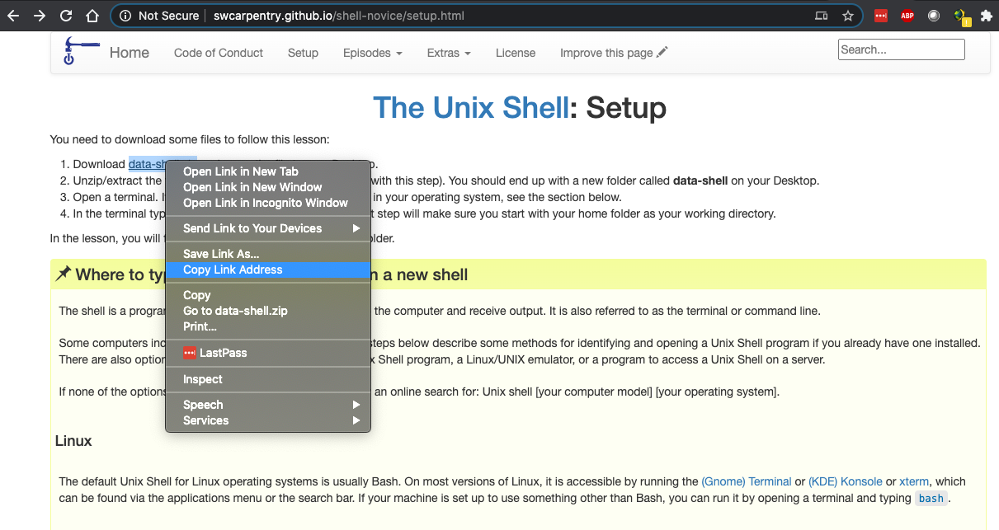
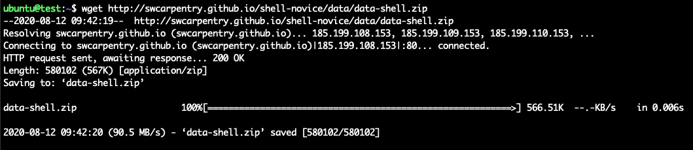
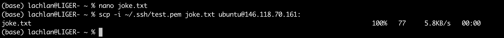
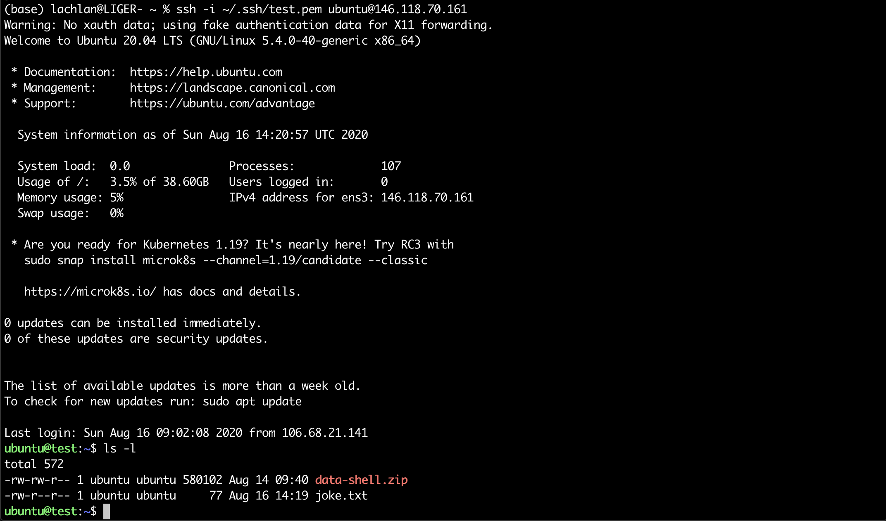
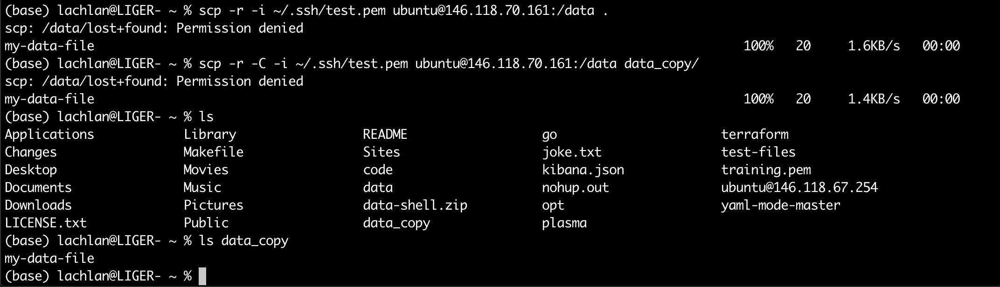

Data
Overview
Teaching: 20 min
Exercises: 0 minQuestions
How do we move data to and from an instance?
How do we backup data?
Objectives
Transfer Protocols
Transfer protocols are the different sets of rules governing the exchange or transmission of data between devices. The functionality of each protocol can give advantages depending on the situation in which they are used.
HTTP is the protocol used to fetch data from web servers. It is a very simple protocol that is built upon TCP/IP and transfers via unencrypted text.
SCP is a network protocol which ensures the authenticity, encryption, and confidentiality of data by making use of SSH for transferring files. In SCP you do not need to start an FTP session or log into the remote host explicitly for transfer.
SFTP is another protocol packaged with SSH. Like SCP it uses a secure connection to transfer files, however unlike SCP it allows you to traverse the filesystem on both the local and remote systems. There are many graphical file management tools which have transfer protocols like SFTP integrated into them (for eg cyberduck or filezilla), but in this lesson we will only be introducing command line tools.
Activity: Copying files with HTTP
We’ll start by using the HTTP protocol in the form of the
wgettool. To download a file to your instance usingwgetyou need the URL for the file. The command is then simply:$ wget `file_URL`For example, in the figure below you can see the setup page for the Software Carpentry lesson on the Unix Shell. By right-clicking on the data-shell.zip link you can copy the URL to the clipboard.

Then, from the terminal logged into your instance, type the wget command, paste the link and then hit enter. You should see output like that below:

Activity: Transferring files with SCP
HTTP tools like
wgetare good for online files, but what about data you have on your machine, or another machine at your institute? This is where tools that use SSH are useful. So, for example, to copy a file from your local machine to your instance usingscp:$ scp -i `name_of_your_key`.pem `local_file_path` `login_name`@###.###.###.###:`instance_file_path`
This command might be starting to look a little complicated, but you just need to remember that most CLI copying tools, just like ordinarycp, require you to provide where something is that needs to be copied (origin), and where it needs to be copied to (destination) in that order.Lets try that now, either by creating a text file, or copying a file you already have. For example, from your local terminal:

Note: If you leave the instance file path empty, it will copy your file into your ubuntu users home directory.So now if we log in to our instance we can check that the transfer worked:
If you want to copy multiple files you simply add them to the command:
$ scp -i `name_of_your_key`.pem `file1_path` `file2_path` `login_name`@###.###.###.###:`instance_file_path`Or if you need to copy an entire directory, you can do so by using the recursive flag (-r):
$ scp -r -i `name_of_your_key`.pem `local_directory_path` `login_name`@###.###.###.###:`instance_folder_path`
To copy a file from your instance to your local computer, you have to swap the order of the origin and the destination. For example, if you want a copy of the data directory you created in the Storage episode, you would use:

Why is there the permission denied message, and what is the difference between the two scp commands?Solution
The permission error occurs because lost+found file is still owned by root, not the ubuntu user. The -C in the second command stands for enable compression. By using this option transfer speeds can be increased while copying. It automatically enables compression at the origin and decompression at the destination.
Key Points